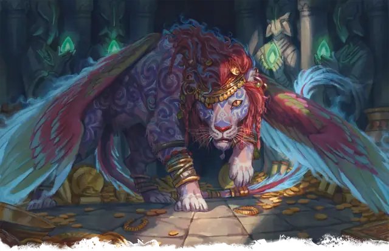

Сфинкс загадок
Sphinx of Secrets
Большой Небожитель, Принципиальный Нейтральный

Класс Защиты 16 Инициатива +5 (15)
Хиты 136 (16к10 + 48)
Скорость 40 футов, Полёта 60 футов
| мод | спас | ||
|---|---|---|---|
| СИЛ | 18 | +4 | +4 |
| ЛОВ | 15 | +2 | +2 |
| ТЕЛ | 16 | +3 | +3 |
| мод | спас | ||
|---|---|---|---|
| ИНТ | 18 | +4 | +4 |
| МДР | 18 | +4 | +4 |
| ХАР | 18 | +4 | +4 |
Сопротивление урону Излучение, Некротический
Иммунитеты Психический; Испуганный, Очарованный
Чувства пассивное Восприятие 17, Истинное зрение 60 футов
Языки Общий, Небесный
Опасность 8 (3 900 опыта; БВ +3)
Особенности
Непостижимость. Посредством магии невозможно удалённо наблюдать за сфинксом или прочитать его мысли без его разрешения. Проверки Мудрости (Проницательность) для выяснения его намерений или искренности совершаются с Помехой.
Сопротивление магии. Сфинкс совершает с Преимуществом спасброски от заклинаний и прочих магических эффектов.
Действия
Мультиатака. Сфинкс совершает три атаки Когтями. Он может заменить одну из этих атак использованием Проклятия загадки.
Когти. Бросок рукопашной атаки: +7, досягаемость 5 фт. Попадание: 13 (2к8 + 4) Рубящего урона плюс 7 (2к6) урона Излучением.
Проклятие загадки. Спасбросок Интеллекта: Сл 15, одно видимое сфинксом существо в 60 футах. Провал: 21 (6к6) Психического урона, и цель становится проклята неразрешимой загадкой. Проклятая цель совершает с Помехой проверки характеристик и броски атак. Вдобавок если она совершает действие Магия, то должна преуспеть в спасброске Интеллекта Сл 15, иначе потратит это действие впустую. Проклятая цель может действием Изучение совершить проверку Интеллекта Сл 15, чтобы разрешить загадку, оканчивая проклятие при успехе. Проклятие оканчивается преждевременно, если сфинкс проклинает другую цель.
Сотворение заклинаний. Сфинкс загадок сотворяет одно из следующих заклинаний, не нуждаясь в Материальных компонентах (заклинательная характеристика — Интеллект, Сл спасброска заклинаний 15):
Неограниченно: Обнаружение магии, Опознание, Фокусы
1/день каждое: Поиск объекта, Снятие проклятия
Бонус мастерства +3
Среда обитания Пустыня, Верхние планы
Сокровища Магические
Сфинксы
Собиратели и хранители секретов
Сфинксы оберегают тайны мультивселенной. Возникающие из духов исследователей и мудрецов, сфинксы понимают силу истины и важность её сохранения. Своей мудростью они делятся лишь с теми, кто докажет собственную рассудительность или преуспеет в испытании достоинства — будь то в решении загадок или схватках с опасными тварями. На протяжении своей жизни сфинксы способны менять обличье по мере того, как постигают всё более тонкие грани космических загадок.
Сфинксы загадок обычно связаны с местом великой магии или учёности. Впрочем, эти бессмертные создания зачастую переживают свои обители и могут оберегать руины былого величия, продолжая при том собственные изыскания. Свои жилища и плоды исследований сфинксы загадок стерегут с неистовой ревностью.